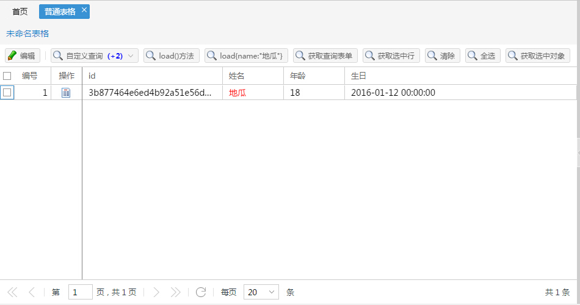

Grid(布局)
介绍
普通表格

示例代码
Ext.define('App.demo.grid.grid.View',{
init: function(){
var view = Ext.create('Ins.grid.Grid',{
//请求地址
url: CTX_PATH + '/module/crudgrid/loadAll',
//列数组
fields: ['id','name','age','birthday'],
//实际列
gridColumns: [{
text: 'id',
dataIndex: 'id',
width: 230
},{
text: '姓名',
dataIndex: 'name',
width: 100
},{
text: '年龄',
dataIndex: 'age',
width: 100
},{
text: '生日',
dataIndex: 'birthday',
flex: 1
}
],
//主键字段
pkField : "id",
//是否自动加载数据
loadOnShow: false,
//隐藏标题
hideTitle: false,
//隐藏表头
hideTableHead: false,
//是否隐藏分页工具
hidePagingBar: false,
//工具栏按钮
actionButtons: [{
text: '编辑',
iconCls: 'icon-edit',
handler: function(){
var SelectedTr = view.getSelectedView()
if(SelectedTr.records.length != 1){
Message.msg("请选择要编辑的行，不能多选");
return;
}
Message.msg("编辑"+SelectedTr.idSer);
}
},{
text: 'load()方法',
iconCls: 'icon-search',
handler: function(){
view.load();
}
},{
text: 'load{name:"地瓜"}',
iconCls: 'icon-search',
handler: function(){
view.load({name:"地瓜"});
}
},{
text: '获取查询表单',
iconCls: 'icon-search',
handler: function(){
var searchfrom = view.getConditionForm();
alert("name查询条件值等于："+searchfrom.getField("name").value);
}
},{
text: '获取选中行',
iconCls: 'icon-search',
handler: function(){
//多选时只能获取到最后一个选中的
var records = view.getCurrentRecord();
console.log(records);
if (records==null) {
alert("请选择一行");
return;
}
alert("你选择的id是："+records.id+"多选时只能获取到最后一个选中的");
}
},{
text: '清除选中',
iconCls: 'icon-search',
handler: function(){
view.clearSelect();
}
},{
text: '全选',
iconCls: 'icon-search',
handler: function(){
view.selectCurrentPageRecords();
}
},{
text: '获取选中对象',
iconCls: 'icon-search',
handler: function(){
var selects =view.getSelectedView();
alert("返回对象所具有属性所具有的属性有count：选中数量，idSer：选中id json字符串，idArr:选中id数组，records选中的行对象数组");
// selects.length;
// selects.ids;
// selects.idArr;
// selects.records;
}
}],
//按钮排序
//['新增','删除','查询','|','自定义']
actionButtonsSort: ['新增','编辑','删除','|','自定义按钮'],
//是否显示复选框
checkable: true,
//默认列宽
defaultColumnWidth: 120,
//列是否自适应撑满布局(如果为true，不会出现滚动条)
autoColunmWidth: false,
//列值映射器
valueMapper: {
name : function(val, metaData, record, index) {
//参数说明：val：当前单元格的值，metaData:当前单元格的元数据，
//record:当前行，index:当前行的下标(从0开始)
// metaData.style = "background-color: #C7EDCC";
// console.log(record.data);
// console.log(index);
return ""+val+"";
}
},
//选择模式：多选MULTI、单选SINGLE
selectMode : "MULTI",
//是否只点击复选框才选中
selectCheckOnly: true,
//每页多少条数据
pageSize: 20,
//自定义分页数组(使用这个必须配置pageSize,并且pageSize必须等于其中的某项)
customPage : [10,20,30,50,100],
//表格是否可编辑
editable: false,
//表格编辑类型row/cell
editType: 'row',
//禁用所有列的排序
disabledColumnsSortable : false,
//加载完成事件参数为store，store：储数据对象Model的集合缓存；
onLoadComplete: function(store){
// console.log("触发事件：onLoadComplete");
// console.log(store.data.items[1].data.name);
},
//记录单击监听器，参数record:Ext.data.Model类型 行记录,index:行号，e:事件
onRowClick : function(record, index, e){
// console.log("触发事件：onRowClick");
// alert("单击事件"+record.data.name);
// console.log(record);
// console.log(index);
// console.log(e);
},
//记录双击监听器，参数record:Ext.data.Model类型 行记录,index:行号，e:事件
onRowDbClick : function(record, index, e){
console.log("触发事件：onRowDbClick");
alert("双击事件"+record.data.name);
console.log(record);
console.log(index);
console.log(e);
},
//记录右键单击事件，参数record:Ext.data.Model类型 行记录,index:行号，e:事件
onContextMenuClick: function(record, index, e){
console.log("触发事件：onContextMenuClick");
alert("右键单击事件"+record.data.name);
console.log(record);
console.log(index);
console.log(e);
},
//复选框选中事件,参数record:Ext.data.Model类型 行记录,index:行号
onRowSelect: function(record, index){
// console.log("触发事件：onRowSelect");
// alert("复选框选中事件"+record.id);
// console.log(record);
// console.log(index);
},
//复选框取消选中事件,参数record:Ext.data.Model类型 行记录,index:行号
onRowDeSelect: function(record, index){
// console.log("触发事件：onRowDeSelect");
// alert("复选框选取消选中事件"+record.id);
// console.log(record);
// console.log(index);
},
//复选框状态变化参数 selected Ext.data.Model[]类型[constructor]
onRowSelectChange: function(selected){
console.log("触发事件：onRowSelectChange");
console.log(selected);
console.log(selected[0].id);
console.log(selected[0].data.name);
// alert("复选框选取消选中事件"+selected[0].record.id);
},
//是否隐藏行编号
hideRowNumber: false,
//编号title
rowNumberText: '编号',
//编号列宽
rowNumberWidth: 60,
//是否显示操作列
showActionColumn: true,
//操作列按钮
actionColumnMenu: [{
text:'查看明细',
iconCls: 'icon-search',
handler: function(){
Message.msg("查看明细");
}
}],
//行记录菜单单击前,参数record:Ext.data.Model类型 行记录
actionColumnClick : function(record){
console.log("触发事件：actionColumnClick");
console.log(record);
return true;
},
//跨页选择模式
acrossSelect : false,
//查询条件
condition : {
fields:[{
text: '用户名',
name: 'name'
},{
text: '生日',
xtype: 'ins_datefield',
name: 'name'
}],
onBeforeSearch:function(form){
console.log(form);
// alert(form.getField('name').value);
return true;
},
buttonText : "自定义查询",
columnSize : 1,
defaultFieldWidth : 200
//fields : [],
//onBeforeSearch : null,
//buttonText : "查询",
//下面属性为默认值，程序后面会使用 Ext.applyIf 设置
//columnSize : 2,
//defaultFieldWidth : 200
}
});
return view;
}
});
类名
Ins.grid.Grid
别名
alias : ["widget.ins_grid"]
继承自
Ext.tab.Panel
构造对象
var view = Ext.create('Ins.grid.Grid',{
//请求地址
url: CTX_PATH + '/module/crudgrid/loadAll',
//列数组
fields: ['id','name','age','birthday'],
//实际列
gridColumns: [{
text: 'id',
dataIndex: 'id',
width: 230
},{
text: '姓名',
dataIndex: 'name',
width: 100
},{
text: '年龄',
dataIndex: 'age',
width: 100
},{
text: '生日',
dataIndex: 'birthday',
flex: 1
}
],
//工具栏按钮
actionButtons: [{
text: '编辑',
iconCls: 'icon-edit',
handler: function(){
var SelectedTr = view.getSelectedView()
if(SelectedTr.records.length != 1){
Message.msg("请选择要编辑的行，不能多选");
return;
}
Message.msg("编辑"+SelectedTr.idSer);
}
}],
//按钮排序
//['新增','删除','查询','|','自定义']
actionButtonsSort: ['编辑','|','自定义查询'],
//查询条件
condition : {
fields:[{
text: '用户名',
name: 'name'
},{
text: '生日',
xtype: 'ins_datefield',
name: 'name'
}],
onBeforeSearch:function(form){
console.log(form);
// alert(form.getField('name').value);
return true;
},
buttonText : "自定义查询",
columnSize : 1,
defaultFieldWidth : 200
}
});
属性
| 属性名 | 属性值类型 | 描述 | 默认值 |
|---|
| showSelCheck |
boolean |
function:showSelCheck(record, rowIndex){}根据返回值确定是否显示复选框。参数说明record当前行,rowIndex当前行号 |
false |
| url |
String |
表格加载数据请求地址 |
null |
| fields |
String[] |
列数组 |
[] |
| gridColumns |
Object[] |
实际列 |
[] |
| pkField |
string |
主键字段 |
'id' |
| loadOnShow |
boolean |
是否自动加载数据 |
true |
| hideTitle |
boolean |
是否隐藏标题 |
false |
| hideTableHead |
boolean |
是否隐藏表头 |
false |
| hidePagingBar |
boolean |
是否隐藏分页工具 |
false |
| actionButtons |
Object[ ] |
工具栏按钮 |
[] |
| actionButtonsSort |
String[ ] |
工具栏按钮排序 |
[ ] |
| checkable |
boolean |
是否显示复选框 |
true |
| defaultColumnWidth |
number |
默认列宽 |
120 |
| autoColunmWidth |
boolean |
列是否自适应撑满布局(如果为true，不会出现滚动条) |
false |
| valueMapper |
Object |
valueMapper: {
name : function(val, metaData, record, index) {
//参数说明：val：当前单元格的值，metaData:当前单元格的元数据，
//record:当前行，index:当前行的下标(从0开始)
return ""+val+"";
}
},
|
null |
| selectMode |
String |
选择模式：多选MULTI、单选SINGLE |
"MULTI" |
| selectCheckOnly |
boolean |
是否只点击复选框才选中 |
true |
| exportToExcel |
boolean |
是否允许导出 |
false |
| pageSize |
number |
每页多少条数据 |
20 |
| customPage |
number[] |
自定义分页数组(使用这个必须配置pageSize,并且pageSize必须登录其中的某项) |
[10,20,30,50,100] |
| editable |
boolean |
表格是否可编辑 |
false |
| editType |
String |
表格编辑类型row/cell |
'row' |
| disabledColumnsSortable |
boolean |
禁用所有列的排序 |
false |
| hideRowNumber |
boolean |
是否隐藏行编号 |
true |
| rowNumberText |
String |
编号title |
'编号' |
| rowNumberWidth |
number |
编号列宽 |
50 |
| showActionColumn |
boolean |
是否显示操作列 |
true |
| actionColumnMenu |
Menu[ ] |
//操作列按钮
actionColumnMenu: [{
text:'查看明细',
iconCls: 'icon-search',
handler: function(){
Message.msg("查看明细");
}
}],
|
[ ] |
| acrossSelect |
boolean |
跨页选择模式 |
false |
| model |
String |
模式，分为服务器端表格（server）与本地表格（local） |
"server" |
| localData |
Object |
本地表格时的数据 |
[] |
| condition |
Object |
condition : {
fields:[{
text: '用户名',
name: 'name'
},{
text: '生日',
xtype: 'ins_datefield',
name: 'name'
}],
onBeforeSearch:function(form){
console.log(form);
// alert(form.getField('name').value);
return true;
},
buttonText : "自定义查询",
columnSize : 1,
defaultFieldWidth : 200
}
|
{ } |
方法
| 返回值 | 方法名称 | 描述 |
|---|
| void |
load() |
加载数据 |
| void |
load(parm) |
根据条件加载数据，例：{name:"地瓜"} |
| form |
getConditionForm() |
获取查询表单 |
| record |
getCurrentRecord() |
获取最后一次选中的行对象 |
| void |
clearSelect() |
清除所有选中 |
| void |
selectCurrentPageRecords() |
全选(本页数据) |
| Object |
getSelectedView() |
返回对象所具有属性所具有的属性有count：选中数量，idSer：选中id json字符串，idArr:选中id数组，records选中的行对象数组 |
| void |
setToolbarDisabled(boolean status) |
设置工具栏是否禁用 |
事件
| 返回值 | 事件名称 | 绑定方法 | 描述 |
|---|
| void |
onLoadComplete |
function(store){ } |
加载完成事件参数为store，store：储数据对象Model的集合缓存； |
| void |
onRowClick |
function(record, index, e){ } |
记录单击监听器，参数record:Ext.data.Model类型 行记录,index:行号，e:事件 |
| void |
onRowDbClick |
function(record, index, e){ } |
记录双击监听器，参数record:Ext.data.Model类型 行记录,index:行号，e:事件 |
| void |
onContextMenuClick |
function(record, index, e){ } |
记录右键单击事件，参数record:Ext.data.Model类型 行记录,index:行号，e:事件 |
| void |
onRowSelect |
function(record, index){ } |
复选框选中事件,参数record:Ext.data.Model类型 行记录,index:行号 |
| void |
onRowDeSelect |
function(record, index){ } |
复选框取消选中事件,参数record:Ext.data.Model类型 行记录,index:行号 |
| void |
onRowSelectChange |
function(Object selected){ } |
复选框状态变化参数 selected Ext.data.Model[]类型[constructor] |
| boolean |
actionColumnClick |
function(record){ } |
行记录菜单单击前,参数record:Ext.data.Model类型 行记录，返回true弹出行记录菜单选项，false或null将不弹出行记录菜单选项 |
| void |
onConditionShow |
function(conditionForm){ } |
查询框显示前事件 |